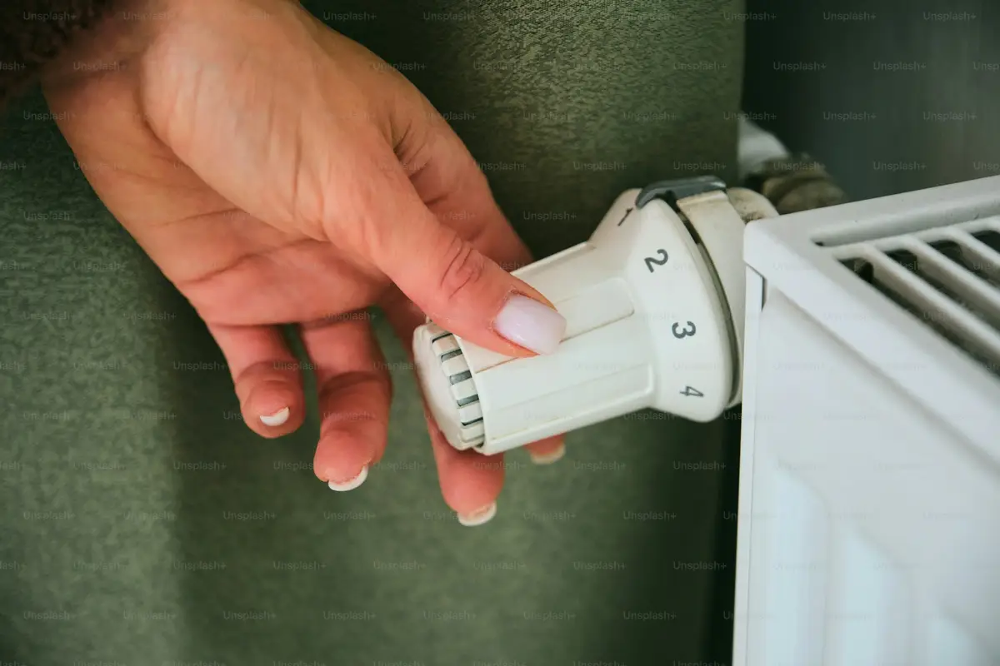

Energieberatung und individueller Sanierungsfahrplan
Eine Energieberatung für Bestandsgebäude sollte die Grundlage jeder energetischen Sanierung sein, auch für Einzelmaßnahmen wie den Fenstertausch oder die Fassadendämmung. Wir bieten die geförderte Beratung nach BAFA/KfW-Richtlinien und die freie Energieberatung.


Der erste Schritt: die sorgfältige Aufnahme.
Am Anfang steht die fachkundige Aufnahme der Gebäudehülle (Bauteildicken, Baustoffe, U-Werte), der energetischen Schwachstellen (Wärmebrücken, Luftdichtheit) und der Anlagentechnik (Heizung, Warmwasser, Leitungen, Lüftung). Wird dieser Schritt nicht ordnungsgemäß ausgeführt, ist jede nachfolgende Berechnung unseriös.
Auf dieser Basis ermitteln wir den energetischen Ist-Zustand, vergleichen ihn mit den gesetzlichen Anforderungen und ordnen das Gebäude einer Energieeffizienzklasse zu. Das ist die Grundlage für die Beratung und den Sanierungsfahrplan.
Auch wenn nur einzelne Maßnahmen geplant sind, lohnt die Beratung vorab: Ist die Maßnahme sinnvoll, oder wäre das Geld woanders besser angelegt? Und: Einzelmaßnahmen an der Gebäudehülle können die feuchtetechnische Balance stören, dann tritt Schimmel auf, wo vorher keiner war.
Beratung nach BAFA/KfW-Richtlinien
Die frühere „Vor-Ort-Energieberatung“. Sie ist Voraussetzung für viele Förderprogramme und wird selbst gefördert. Seit dem 1. Juli 2023 wird sie für Wohngebäude nur noch gefördert, wenn gleichzeitig ein individueller Sanierungsfahrplan erstellt wird.
Viele Randbedingungen sind dabei strikt vorgegeben: Für jeden Raum gilt die Standardtemperatur von 20 °C, der Warmwasserbedarf wird nach Wohnfläche berechnet, auch wenn Sie nur noch zu zweit im Haus wohnen.
Wir sind in der Energieeffizienz-Expertenliste für Förderprogramme des Bundes in der Kategorie „Energieberatung für Wohngebäude“ gelistet. Damit sind unsere Beratungen, Sanierungsfahrpläne und Baubegleitungen förderfähig.
Für Wohnungseigentümergemeinschaften erläutern wir die Ergebnisse auf Wunsch in der Eigentümerversammlung; auch das wird bezuschusst.
Freie Energieberatung
Ohne die oft hohen Ansprüche der staatlichen oder kommunalen Förderprogramme. Es müssen lediglich die Anforderungen des Gebäudeenergiegesetzes (GEG, vormals EnEV) eingehalten werden.
Geeignet für Eigentümer, die Sanierungskosten lieber von der Steuer absetzen, sich den Aufwand der Antragstellung sparen und nicht davon abhängig sein wollen, ob ein Förderprogramm zwischenzeitlich eingestellt wird.
Der Vorteil: Wenn Sie einzelne Räume kaum noch heizen oder wenig Warmwasser brauchen, rechnen wir mit Ihren echten Werten. Maßnahmen werden nach Ihren Bedürfnissen geplant und bringen trotzdem, oder gerade deswegen, die gewünschte Einsparung.
Der individuelle Sanierungsfahrplan (iSFP)
Der iSFP fasst die Bestandsanalyse von Gebäudehülle und Anlagentechnik übersichtlich in Bild und Text zusammen und vergleicht den energetischen Zustand mit den aktuellen gesetzlichen Anforderungen. Dazu kommen Sanierungsmaßnahmen, mit denen das Gebäude Schritt für Schritt oder als Gesamtpaket zum Effizienzhaus wird.
Er enthält geschätzte Kosten je Maßnahme (aus Erfahrungswerten oder vorliegenden Angeboten), die berechneten Einsparungen bei Heizung und Warmwasser und Hinweise auf mögliche Fördermittel.
Förderung der Beratung
Die Energieberatung durch einen Energieeffizienz-Experten wird vom BAFA mit 50 % des förderfähigen Beratungshonorars bezuschusst. Der Höchstbetrag hängt von der Gebäudegröße ab. Wählen Sie Ihren Gebäudetyp und klicken Sie auf die Segmente.
Honorare sind Richtwerte zur Veranschaulichung. Stand März 2025, maßgebend sind die aktuellen Vorgaben des BAFA (www.bafa.de) und der KfW (www.kfw.de). Die Förderhöhe hängt vom Programm ab und kann sich ändern.
Der Zuschuss beträgt 50 % des Honorars, höchstens 650 € beim Ein-/Zweifamilienhaus.
Beratung für Ihr Gebäude?
Sagen Sie uns kurz, um welches Haus es geht. Wir schlagen den passenden Weg vor: gefördert mit iSFP oder frei.